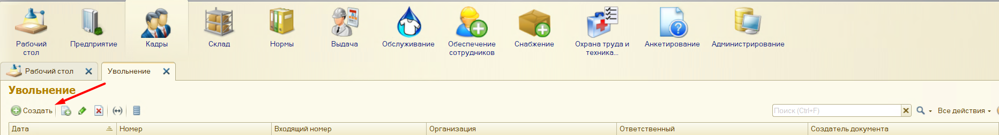
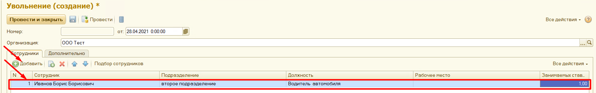

Чтобы уволить сотрудника, необходимо нажать кнопку «Создать» (Рис. 1)

Рис. 1
В открывшемся окне необходимо выбрать организацию (Рис. 2).
Заполнить документ можно подбором, для этого нажмите кнопку «Подбор сотрудников» (Рис. 2).
Рис. 2
Откроется список, в котором с помощью поиска можно найти нужного сотрудника и перетащить его в нижнюю таблицу «Данные для переноса в таблицу», затем нажать кнопку «Перенести в документ» (Рис.3).
Рис.3
Так же можно добавлять сотрудников с помощью кнопки «Добавить». После этого необходимо выбрать сотрудника из списка, заполнить подразделение, должность, рабочее место, ставку, с которой его увольняют (Рис. 4).

Рис. 4
После того, как документ будет заполнен, необходимо нажать кнопку «Провести и закрыть» (Рис. 5).
Рис.5